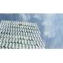

최신의약기사 소비자원 "의약품 점자 표시 비율 낮고 가독성도 떨어져" 의약품 사후평가, 찬반 팽팽한 대립 불법 의약품 판매 사이트 차단, '60일→7일' 단축 검토 美·中무역갈등·日경제전쟁..의약품·의료기기 중남미 돌파 답?
 의약품 사후평가, 찬반 팽팽한 대립
의약품 사후평가, 찬반 팽팽한 대립 美·中무역갈등·日경제전쟁..의약품·의료기기 중남미 돌파 답?
美·中무역갈등·日경제전쟁..의약품·의료기기 중남미 돌파 답?